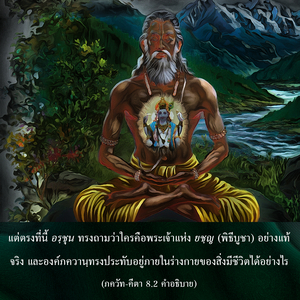

ใครคือพระเจ้าแห่งการบูชา พระองค์ทรงประทับอยู่ในร่างกายได้อย่างไร โอ้ มธุสูทน และขณะที่กำลังจะตายพวกที่ปฏิบัติการอุทิศตนเสียสละรับใช้จะสามารถรู้ถึงพระองค์ได้อย่างไร

“พระจ้าแห่งการบูชา” อาจหมายถึงพระอินทร์ หรือพระวิษฺณุก็ได้ พระวิษฺณุทรงเป็นประธานของเหล่าปฐมเทวดารวมทั้งพระพรหม และพระศิวะ พระอินทร์ทรงเป็นประธานของเหล่าเทวดาผู้บริหาร ทั้งพระอินทร์ และพระวิษฺณุได้รับการบูชาในพิธีบูชา ยชฺญ แต่ตรงที่นี้ อรฺชุน ทรงถามว่าใครคือพระเจ้าแห่ง ยชฺญ (พิธีบูชา) อย่างแท้จริง และองค์ภควานฺทรงประทับอยู่ภายในร่างกายของสิ่งมีชีวิตได้อย่างไร
อรฺชุน ทรงเรียกพระองค์ว่า มธุสูทน เนื่องจากครั้งหนึ่งองค์กฺฤษฺณเคยสังหารมารชื่อ มธุ อันที่จริงคำถามเหล่านี้เป็นธรรมชาติแห่งความสงสัยซึ่งไม่ควรเกิดขึ้นในจิตใจของ อรฺชุน เพราะทรงเป็นสาวกผู้มีกฺฤษฺณจิตสำนึก ดังนั้น ความสงสัยเหล่านี้เหมือนกับมารเนื่องจากองค์กฺฤษฺณทรงมีความชำนาญมากในการสังหารมาร ณ ที่นี้ อรฺชุน ทรงเปล่งพระนามขององค์กฺฤษฺณว่า มธุสูทน เพื่อว่าองค์กฺฤษฺณอาจสังหารมารแห่งความสงสัยที่ปรากฏขึ้นภายในใจของ อรฺชุน ได้
คำว่า ปฺรยาณ-กาเล ในโศลกนี้มีความสำคัญมาก เพราะว่าอะไรก็แล้วแต่ที่เราทำในชีวิตจะได้รับการทดสอบขณะตาย อรฺชุน ทรงมีความกระตือรือร้นมากที่จะทราบถึงบุคคลที่ปฏิบัติกฺฤษฺณจิตสำนึกอยู่เสมอ ว่าควรอยู่ในสภาวะเช่นไรในวินาทีสุดท้าย ขณะกำลังจะตายการปฏิบัติหน้าที่ทั้งหมดของร่างกายจะกระเจิง และจิตใจจะไม่อยู่ในสภาวะที่เหมาะสม เมื่อถูกรบกวนจากสภาวะทางร่างกายเราอาจไม่สามารถระลึกถึงองค์ภควานฺได้ มหาราช กุลเศขร ผู้เป็นสาวกที่ยิ่งใหญ่ภาวนาว่า “องค์ภควานฺที่รักปัจจุบันนี้ข้ามีสุขภาพดีให้ข้าตายในทันทีจะดีกว่า เพื่อหงส์แห่งจิตใจของข้าจะได้ซุกไซ้เข้าไปในก้านแห่งพระบาทรูปดอกบัวของพระองค์” การใช้อุปมานี้เนื่องจากหงส์เป็นนกที่อยู่ในน้ำ และชื่นชมยินดีในการซุกไซ้เข้าไปในดอกบัว มันชอบซุกไซ้เข้าไปในดอกบัวเหมือนกับการเล่นกีฬา มหาราช กุลเศขร ตรัสต่อองค์ภควานฺว่า “ปัจจุบันนี้จิตใจข้าไม่ถูกรบกวน และยังมีสุขภาพดีหากตายกะทันหันแล้วคิดถึงพระบาทรูปดอกบัวของพระองค์ ก็มั่นใจได้ว่าการปฏิบัติอุทิศตนเสียสละรับใช้ต่อพระองค์ประสบผลสำเร็จอย่างสมบูรณ์ แต่หากรอจนกระทั่งถึงเวลาตายตามธรรมชาติก็ไม่แน่ใจว่าอะไรจะเกิดขึ้น เพราะว่าในขณะนั้นการทำหน้าที่ต่างๆ ของร่างกายจะกระเจิดกระเจิง คอของฉันอาจจะสำลัก และไม่ทราบว่าจะสามารถสวดภาวนาพระนามของพระองค์ได้หรือไม่ ดังนั้น ให้ข้าตายโดยทันทีจะดีกว่า” อรฺชุน ทรงถามว่าบุคคลจะตั้งมั่นจิตใจอยู่ที่พระบาทรูปดอกบัวขององค์กฺฤษฺณในวิกฤติกาลเช่นนี้ได้อย่างไร